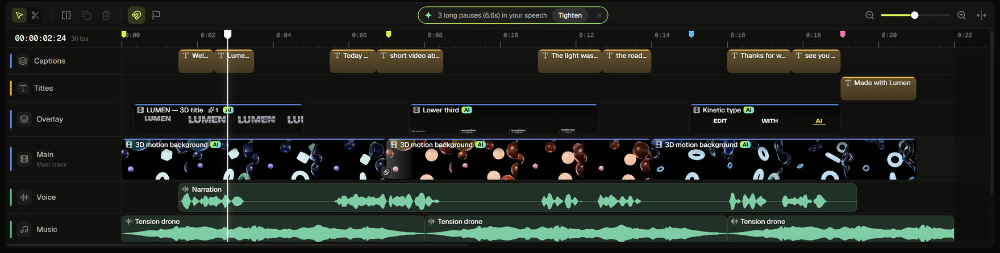
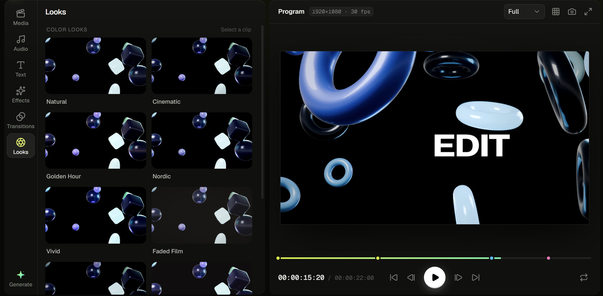
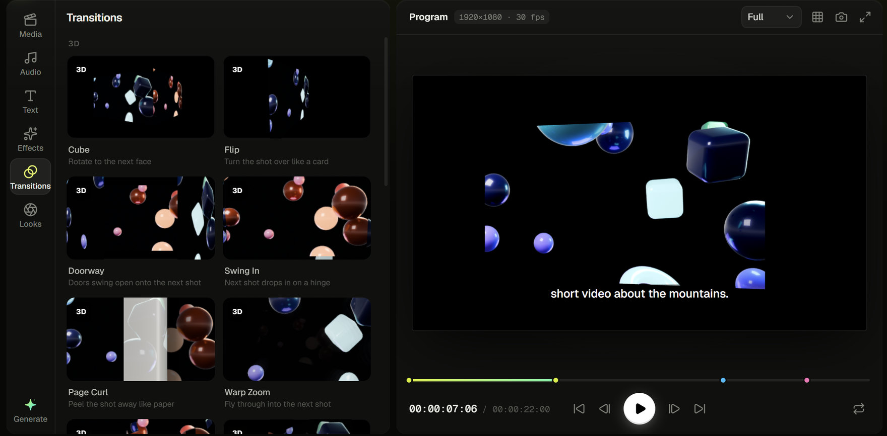

01EDICIÓN MULTIPISTA
CADA CAPA EN SU LUGAR
Una línea de tiempo
que sigue tu ritmo.
Clips de video, audio, títulos, subtítulos y efectos en pistas propias. Recortá, ordená y ajustá cada pieza con precisión.
Editá, mezclá y dale forma a tus ideas con un editor de video de escritorio que pone las herramientas creativas de tu lado.

MÁS QUE CORTAR Y PEGAR
Un espacio creativo para que tus ideas pasen de la cabeza a la pantalla.
01 — 04EL ESTUDIO EN TU COMPU
Una edición completa para trabajar a tu ritmo: de la primera toma al archivo final.
Clips de video, audio, títulos, subtítulos y efectos en pistas propias. Recortá, ordená y ajustá cada pieza con precisión.
“Sacá las pausas largas y agregá subtítulos”
Pedile ayuda para transcribir, ordenar ideas o aplicar cambios. Vos ves lo que hace y podés deshacerlo.

ENCONTRÁ TU PALETAExplorá looks, ajustá el color con herramientas detalladas e importá LUTs .cube para llevar tu estilo más lejos.

UNÍ CADA MOMENTOSumá transiciones, títulos con estilo, efectos, stickers y subtítulos automáticos o escritos por vos.
TU ESTUDIO, EN VIVO
Conectá cámaras, acomodá tus imágenes y videos en pantalla, mezclá los micrófonos con sus faders y elegí cómo pasar de una toma a otra.
Para emitir a una plataforma se necesita FFmpeg compatible instalado y la URL/clave RTMP. También podés grabar el programa en tu equipo.
UNA HERRAMIENTA PARA LA COMUNIDAD
02 / 04 — ABIERTOTU PRÓXIMO PROYECTO EMPIEZA ACÁ
Descargá Faro para Windows y empezá a crear desde tu escritorio.
Windows 10 / 11 · 64 bits · Proyecto de código abierto